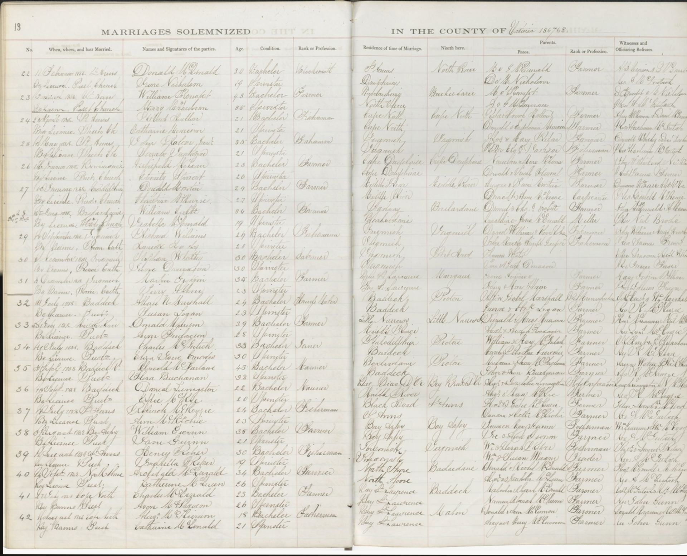

Gén. 1Archibald McDonald & Catherine McQueen
Archibald McDonald et Catherine McQueen sont enregistrés dans les bases de données d'état civil de la Nouvelle-Écosse (Nova Scotia Archives - Births, Marriages, and Deaths).
Source : Nova Scotia Archives, Nova Scotia Births, Marriages, and Deaths, registre des mariages du comté de Victoria, acte no 40 — image de l'acte de mariage.
